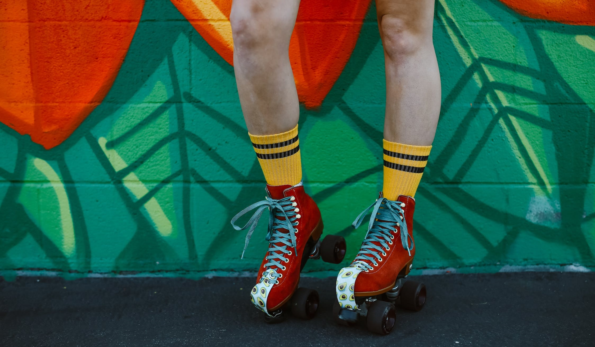

I'm starting out - which roller skates should I buy?
Skating Is the Ultimate Fun and Fitness Activity for All Ages
Roller skating has been around for decades, and it's not just a pastime for kids. Adults of all ages are getting into quad skating, whether it's for exercise, socializing, or just plain fun. If you're thinking of joining in on the fun, you'll need a good pair of quad skates. Check out our skate catalog. We offer different prices and models for all levels of experience.
New Arrivals Rainbow CollectionGet out of your confort zone
Skating outdoors can provide a unique and invigorating experience. Whether you're skating on a trail, in a park, or around your neighborhood, outdoor skating can offer a great workout while also allowing you to enjoy the scenery and fresh air.
Roller discos, on the other hand, offer a fun and nostalgic skating experience. These events often feature upbeat music, colorful lights, and a festive atmosphere, making them a popular activity for groups of friends or family outings.
When in doubt, skate it out.